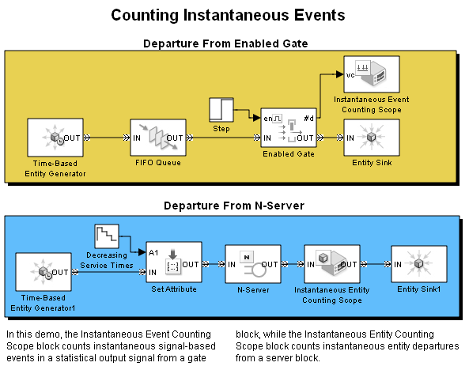

Counting Instantaneous Events
Contents
Overview
This model demonstrates the difference between Instantaneous Event Counting Scope block and the Instantaneous Entity Counting Scope block.
Structure
In this model, the Instantaneous Event Counting Scope block counts instantaneous signal-based events in a statistical output signal from a gate block, while the Instantaneous Entity Counting Scope block counts instantaneous entity departures from a server block.